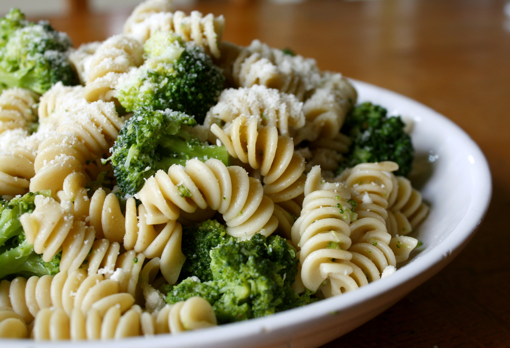

Pasta with broccoli

Description
Pasta with fresh broccoli seasoned with olive oil.
Ingredients
- Fresh broccoli
- Fusilli
- Olive Oil
- Butter
- Salt
Steps
-
Cut florets and parts of broccoli stems into bite-size pieces.
-
Saute broccoli with oil, butter and salt over medium heat for about 12 minutes or until just tender, stirring
frequently.
-
Place hot pasta in a serving dish; top with broccoli mixture.